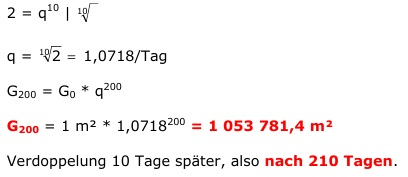

Aufgabe 234 Eine Seerose bedeckt eine Fläche von 1 m², die sich alle 10 Tage verdoppelt. Wie groß ist die Wasserfläche, wenn sie nach 200 Tagen zu 50% bedeckt ist? Nach wie viel Tagen ist die Fläche zugewachsen? 